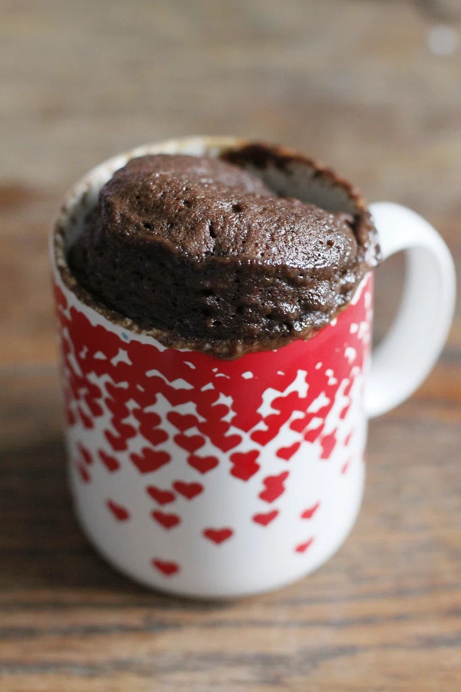

Home
Chocolate Mug Cake

Credit: Rawpixel
Description
This delicous cake can be made very quickly and with few ingredients and tools needed. Even if you do not know
anything about baking you should be able to make this if you follow the ingredients and steps carefully.
Ingredients:
- 30 ml flour
- 15 ml hot chocolate powder (18 g)
- 30 ml artificial sugar, such as xylitol
- 1.25 ml baking powder (not baking soda)
- 2.5 ml oil (preferably canola oil)
- 45 ml fat free milk
- Optional: 1 piece of dark chocolate
Steps:
- Mix the dry ingredients together in a mug.
- Add oil and milk to the dry ingredients and mix until combined.
- Optional: Add 1 piece of chopped up dark chocolate.
- Microwave for 60 seconds if using a small mug.